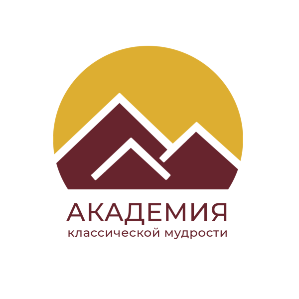

18 бесплатных курсов о карме и мудрости Тибета от Геше Майкла Роуча. Проходить вместе легче: группа поддерживает, а куратор раз в неделю разбирает с вами домашние задания и сложные вопросы.
Нажмите на курс — откроется его страница с описанием и записью. Светятся курсы, на которые сейчас идёт набор.
Некоторые кураторы ведут свою группу курс за курсом. Если вам близок человек — можно идти с ним дальше, от курса к курсу.
Всё онлайн и бесплатно. Подробности придут после регистрации.

АКМ — знания с историей в 2500 лет, способные изменить вашу жизнь.
Академия классической мудрости (АКМ) помогает людям во всём мире получать практические знания, история которых насчитывает более 2500 лет.
Наша цель — сделать учения, которые веками сохранялись и изучались в тибетских монастырях, доступными современному человеку. Эти знания помогают лучше понимать себя и окружающий мир, работать со своим умом и создавать причины для счастливой и осмысленной жизни.
В основе обучения АКМ — программа Института азиатской классики ACI (Asian Classics Institute). Она включает 18 бесплатных курсов и даёт целостное, последовательное образование по великим книгам азиатской философии.
Программу создал Геше Майкл Роуч — первый американец, получивший степень геше после более чем двадцати лет обучения по традиционной монастырской программе.
Под духовным руководством своего Учителя — Кхена Ринпоче Геше Лобсанга Тарчина — он перевёл древние тибетские учения на английский язык и систематизировал их так, чтобы они были понятны современному человеку и применимы в повседневной жизни.
Особое место в развитии АКМ занимают Питер и Мария Мёртл — близкие ученики Геше Майкла Роуча и старшие преподаватели ACI. Более десяти лет они передают древнюю мудрость в разных странах, проводят курсы, живые мероприятия и глубокие медитационные ретриты.
Своей жизнью Питер и Мария показывают, что эти знания способны привести к глубоким внутренним и внешним изменениям.
Сегодня у них сотни студентов, многие из которых сами становятся преподавателями и продолжают передавать знания дальше, сохраняя живую линию передачи.
Благодаря этому вокруг АКМ формируется одно из самых быстрорастущих международных сообществ практиков, которые изучают древнюю тибетскую философию и применяют систему семян в своей жизни ❤️
АКМ делает программу ACI доступной на русском, украинском, болгарском и других языках.
Мы хотим, чтобы эти знания не оставались только философией, а становились частью жизни: помогали людям менять мышление, отношения, работу и окружающий мир.
Что такое курсы ACI, в чём их ценность и почему каждому стоит приступить к ним как можно скорее. И о человеке, благодаря которому мы можем изучать глубокие знания Тибета, не выходя из дома.
Описание всех 18 курсовACI — это 18 базовых и 18 продвинутых курсов Института азиатской классики. Институт основал Геше Майкл Роуч в 1993 году, чтобы сделать содержание древнего тибетского курса «Мастер буддизма» (геше) доступным современным женщинам и мужчинам.
В тибетском монастыре такое обучение занимает от 20 до 25 лет. Геше Майкл прошёл его в монастыре Сера Мей и получил степень геше в 1995 году. Курсы ACI — сжатая версия этой программы: в них 6800 страниц переводов классических текстов, и каждая страница сопровождается полным тибетским оригиналом. Большая часть этого материала стала доступна миру впервые.
Истории студентов, которые прошли курсы.
Истории наших студентов — о чудесах, мечтах и встречах с Учителями.
Выберите курс с открытым набором — или нажмите «Сообщить мне о старте» на нужном курсе, и мы напишем вам, когда откроется запись.